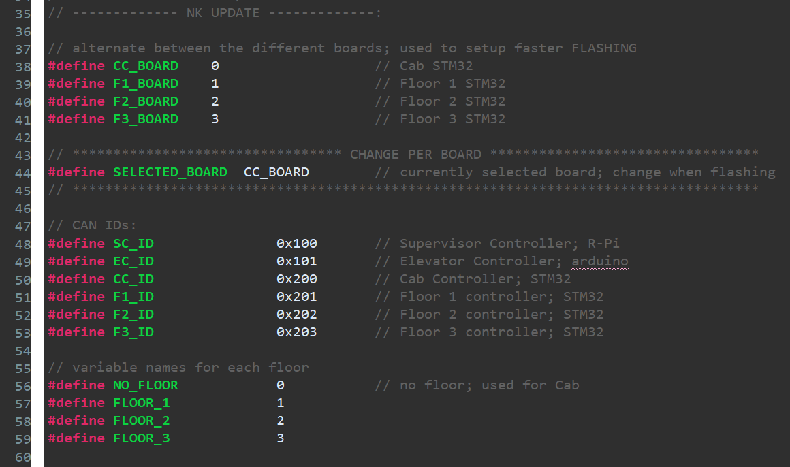
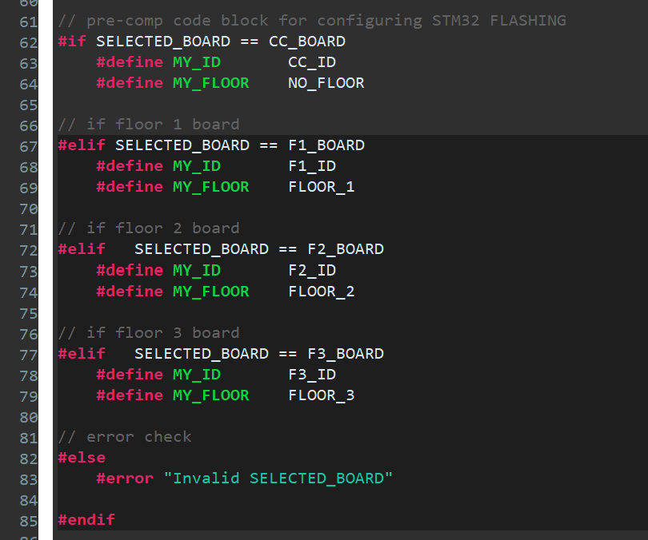
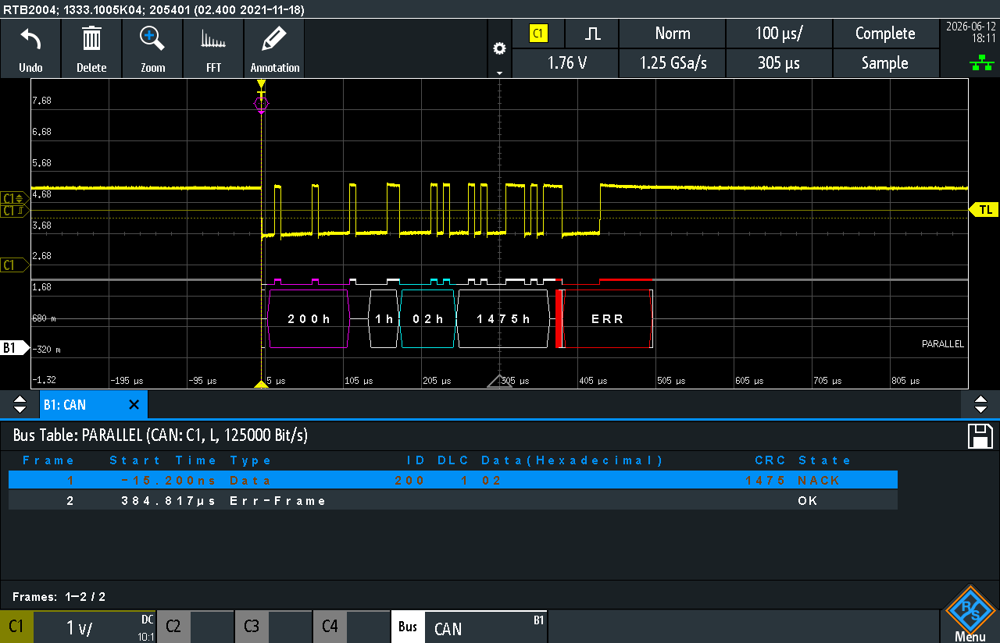

Tested all STM shield PBs and LEDs - functional; tested CAN transmit on all STM shields via scope - functional;
My logbook cover page- ensured all the pushbuttons (PBs) were functional, and that the LED logic worked as well
- next, CAN transmit had to be tested on all shields, and for this, the code was modified to support fast flashing; see below:
- wrote a set of #ifdefs to be able to quickly flash STM32s
- at the top of the file, only SELECTED_BOARD has to be changed, and the code will include/exclude parts
- implemented because the floor controller code will vary slightly, and the cab controller varies from the floor controllers
- see the implementation below:


- all four STM shields were tested and can successfuly transmit CAN messages
- oscilloscope screenshot provided below:
